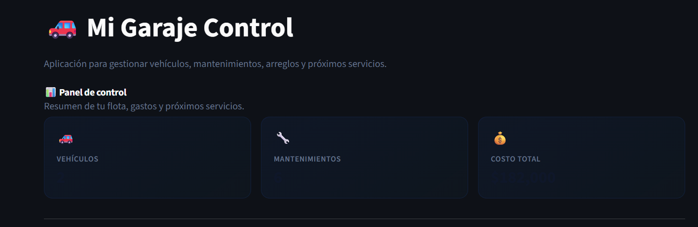

Garage Control
Aplicación orientada al registro de vehículos, mantenimientos, reparaciones y costos asociados. El objetivo es tener un historial claro del estado y gasto de cada vehículo.
Resumen
¿Qué problema resuelve?
Permite reemplazar anotaciones dispersas por un historial organizado de mantenimientos, costos y tareas realizadas sobre cada vehículo.
Funcionalidades principales
- Registro de vehículos.
- Diferenciación entre autos y motos.
- Carga de mantenimientos y reparaciones.
- Registro de costos asociados.
- Consulta del historial por vehículo.
Enfoque técnico
El proyecto trabaja con datos persistentes para construir un historial consultable. La lógica se centra en ordenar información por vehículo, tipo de mantenimiento, fecha y costo.
Captura
Vista del proyecto
Captura de la interfaz principal de la aplicación de mantenimiento.

Historial de mantenimiento
La aplicación permite registrar información útil para controlar gastos, reparaciones y mantenimiento preventivo de autos o motos.
Valor técnico
Qué demuestra este proyecto
Este proyecto muestra capacidad para modelar información cotidiana, organizarla y transformarla en una herramienta de consulta práctica.
Habilidades aplicadas
- Diseño de entidades relacionadas.
- Persistencia de datos locales.
- Registro y consulta de información histórica.
- Separación de datos por tipo de vehículo.
- Construcción de una solución útil para control personal.
Aprendizajes
Este proyecto me permitió practicar cómo convertir una necesidad personal en una aplicación concreta, trabajando con registros, relaciones de datos y funcionalidades orientadas al uso diario.
Mejoras futuras
Roadmap
Posibles mejoras para escalar la aplicación y hacerla más completa.
Próximas funcionalidades
- Alertas por vencimiento de service, seguro o ITV.
- Dashboard de gastos por vehículo.
- Filtros por fecha, tipo de reparación o vehículo.
- Exportación de reportes en PDF o Excel.
- Backup automático de la base de datos.
Objetivo del proyecto
Transformarlo en una herramienta completa para controlar el historial, los gastos y el estado general de vehículos personales.